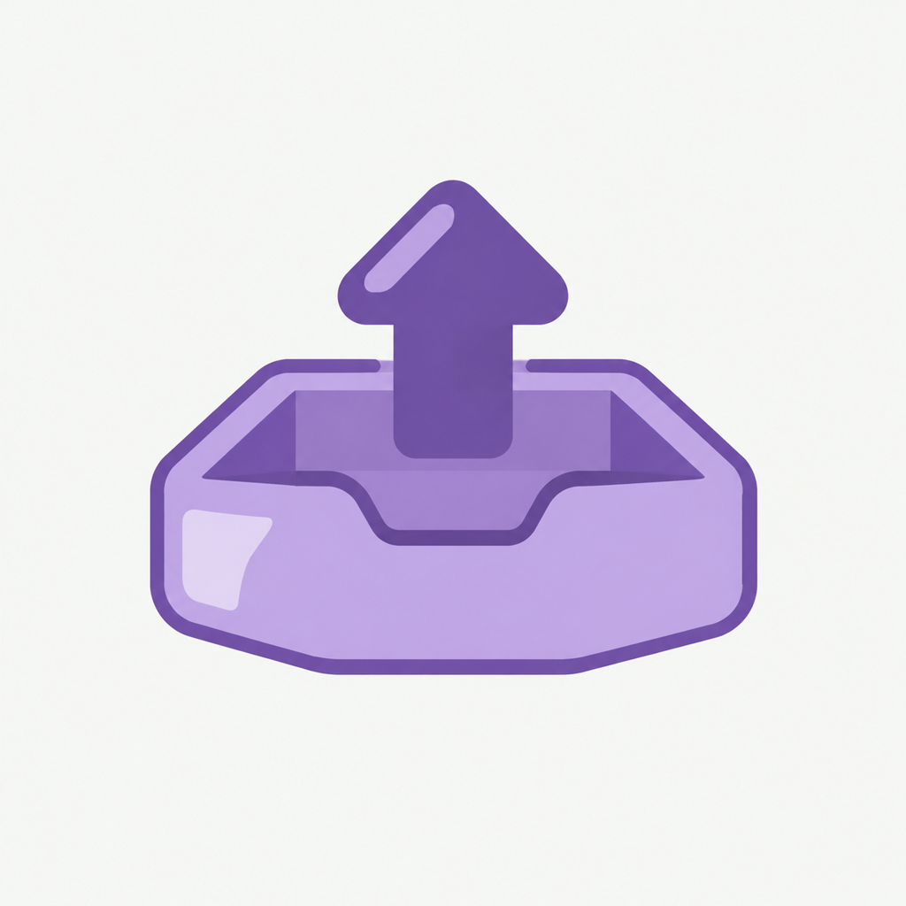

EnglishLearning · icon master set · v3
这一版把 28 枚一次性拉回同一版风格：形态、光照、描边、内高光的画法全部对齐 01–12 那批你已经认可的样子，颜色各走自己功能域，并且每一项都用基准实测分布标定过量。
上一版为什么会「失忆」。13–28 那 16 枚生成时，风格合同被压缩成了一句话、而且只写在临时命令里没存盘，颜色位也只剩 2 个（主面 + 深笔），缺了亮面 —— 所以那批偏平、边缘硬、和 01–12 不像同一套。这一版把合同冻成文件再逐枚套用，并且每枚都带一张同域基准图作参考，才不会再漂。
怎么看这一组。每枚图标的「主面 / 亮面 / 深笔」就是它落点所属功能域的 base / light / deep。落到代码时颜色会 1:1 复现，不会出现「设计稿有 12 种颜色、实机只有 1 种」的落差。
没出母版的 5 枚：Back / ChevronRight / ChevronDown / Close / Check 是纯描边导航符号，工程契约里走 StrokeOnlyIcons，不需要母版。
量色时揪出 4 枚错色，现已全部修完。把 28 张 PNG 逐枚采样、和七域色板对齐后发现：07 spark 是金色（应为语音薄荷）、08 chart 是紫色（应为学习蓝）、10 shield 是偏冷的蓝灰（应为设置中性灰）—— 这三枚是基准批里就存在的错色，色相对不上任何域，已在原文件位置重出（旧图存进 archive-drift/）。第 4 枚 11 upload 是薄荷绿（和 05 / 12 / 18 / 26 / 27 / 28 撞色），已按裁决结果定稿，见下面「11 upload 定稿」。
另有 3 枚二次重出：08 chart 亮面太小、16 star 描边偏细、25 trash 亮面缺失，第一轮审计没过。重写了这三枚的 ICON SUBJECT 段（明确要求「clearly visible」的亮面与「not a hairline」的描边）后重出，现已落回基准区间，旧图存进 archive-drift/*.prev.png。
怎么判「同版」，这件事本身也做了一遍校准。审计把合同里的定性描述换成 9 项可量判据，逐枚量 28 张 PNG。第一版判据是凭直觉写的，拿基准 8 枚（01 02 03 04 05 06 09 12，即你已认可、一个像素没动的那批原图）回测，反而把基准自己判死 —— 那不是基准不合格，是判据取错了。于是全部改成用基准实测分布反推放行区间：
标定后 28 枚全部重跑：28 枚全部通过。唯一曾经不通过的 11 upload（薄荷绿，离 Review 琥珀 Δ337、离 Library 紫也远）在定稿 Library 词库后复测，9 项判据全部落回基准区间。明细在 icon-master/audit/，按 audit-full.ps1 → audit-lift.ps1 → verdict.ps1 顺序即可复跑。
表里的「实测」是从 PNG 里采样出来的真实颜色（每 4 像素取一点，先剔除背景 #F6F9F6），Δ 是与该域目标色板的 RGB 距离。Δ 在 40 以内属正常范围：生成模型对描边、抗锯齿边缘会有轻微混色，深笔尤其偏亮一点。
| # | 图标 | 功能域 | 主面 base | 亮面 light | 深笔 deep | 亮面抬亮带 | 放行判定 |
|---|
这一枚曾经的域归属两处不一致：README 记复习（Review 琥珀），代码里传的却是词库紫。裁决结果：定稿 Library 词库紫。依据是主语义 —— 它有 3 个调用点，其中设置页两个导入入口（导入词库包 / 导入 .wbpack）传 AppDomain.Library，备份中心的「从旧设备恢复」传 AppDomain.Settings；母版定的是主语义域，运行态 tint 仍由各调用点自己决定（Download 也是这种多域用法）。下面是定稿与弃用对照：

这一枚是 v3 收口时留下的唯一待裁决项：登记为 AiSpeech，但代码里没有任何语音调用点 —— 只有 SettingsScreen.kt:407（导出词库，染 Library）与 BackupHubScreen.kt:75（导出学习数据包，染 Settings），语义上也与语音无关。裁决结果：沿用现有这张，不重出、不改主语义域。核实过用户给的附件与工程内文件字节完全相同（SHA256 5B39B0BC…42E94243D，678129 字节），所以正式目录一个字节没动。
合同已从“记住”变成“存档”，下次补图标或改图标直接引用，不会再走样：
| 项 | 冻结的口径 |
|---|---|
| 构图 | 2–3 块重叠实色面 + 恰好一处内高光斜面；描边只作辅助细线，绝不整幅只用描边 |
| 色 | 每枚三色位全部取自本域 base / light / deep；深笔是同色族的更深一档，不共用统一墨色 |
| 光 | 左上柔和单光源，高光只有一处，无投影、无外发光 |
| 禁 | 文字、字母、数字、外框、圆角底板、渐变网格、3D 渲染、照片感 |
| 框内比例 | 主体包围盒长边 24–78%，四边最小留白 ≥10%，四角必须是背景 #F6F9F6（每通道差 ≤8） |
| 可辨识 | 缩到 17dp 仍能凭色族 + 轮廓认出来；5 枚纯描边导航符号不在此列 |
合同全文（含 9 项判据的基准实测区间）与 20 份逐枚提示词：docs/design/icon-master/STYLE-CONTRACT.md · docs/design/icon-master/prompts/ · 审计脚本与结果：docs/design/icon-master/audit/
母版是位图，不能直接进工程 —— 工程里的图标是 24×24 的 ImageVector，要跟着域色 tint、缩到 17dp 仍清楚、浅深两套自动切换。所以母版的作用是「确定语言」，落地要按层重绘：
| 母版元素 | AppIconSpec | 说明 |
|---|---|---|
| 主面 / 亮面 | fillPaths | 半透明底幅，浅套 0.42 / 深套 0.30 |
| 深色块面、局部实心 | accentPaths | 不透明强调层，已接进渲染器 |
| 深色细描边 | strokePaths | 2px 骨架，浅套提亮、深套压深 |